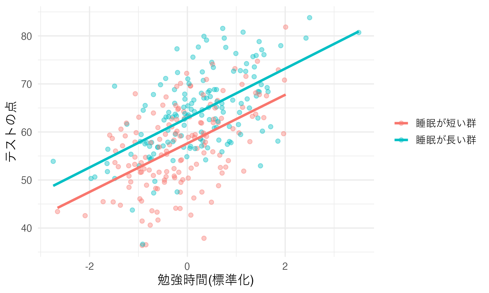
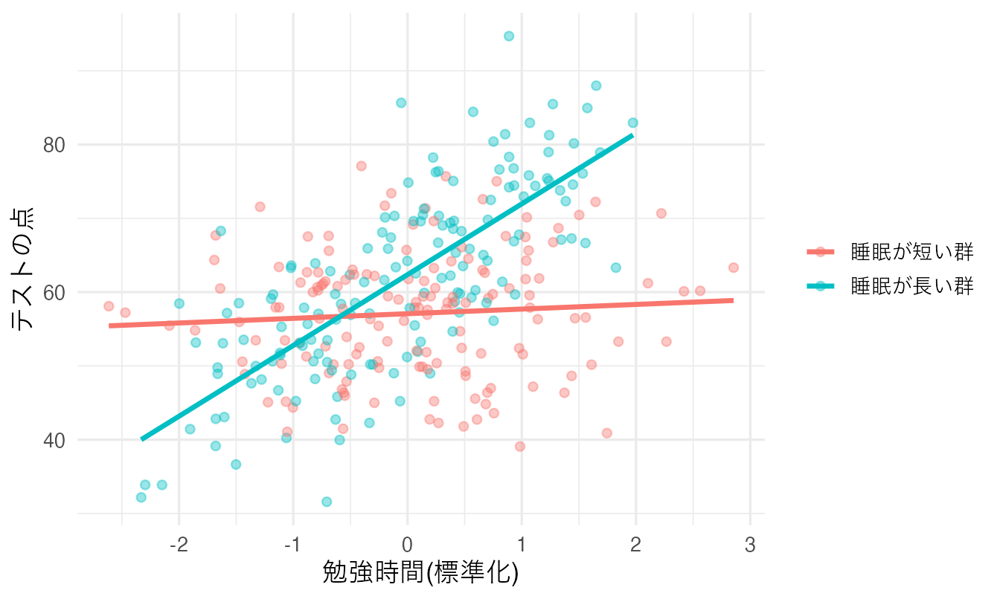

pacman::p_load(tidyverse, MASS)
set.seed(20261185)
n <- 300
# 相関 r をもつ2変数(平均0・SD1)を作る関数
make_x <- function(n, r) {
S <- matrix(c(1, r, r, 1), 2, 2)
X <- MASS::mvrnorm(n, mu = c(0, 0), Sigma = S)
return(tibble::tibble(x1 = X[, 1], x2 = X[, 2]))
}独立変数どうしの相関と交互作用は別の問い
質問への回答：「相関はあるけど交互作用はない」をどう読むか
質問
重回帰分析で2つの独立変数の交互作用を調べたところ，交互作用は認められませんでした。ところが，その前の相関分析では，2つの独立変数のあいだに弱い正の相関がありました。「相関はあるけど交互作用はない」という結果を，どう解釈すればよいでしょうか。
答え：矛盾していません
この2つは，まったく別のことを調べています。
- 独立変数どうしの相関は，「\(X_1\) が高い人は \(X_2\) も高いか」という，独立変数どうしの関係です。\(Y\) は関係ありません。
- 交互作用は，「\(X_1\) が \(Y\) に効く強さが，\(X_2\) の高さによって変わるか」という，\(Y\) への効き方の関係です。
そのため，相関があっても交互作用がないことも，相関がなくても交互作用があることも，どちらもふつうに起こります。「相関はあるが交互作用はない」は，「2つの変数は一緒に動きがちだが，それぞれが \(Y\) に効く強さは，もう一方の値によっては変わらなかった」と読めば大丈夫です。
以下，数値例で確かめます。例として，勉強時間(\(X_1\))と睡眠時間(\(X_2\))でテストの点(\(Y\))を予測する場面を考えます。
例1：相関はあるが，交互作用はない
勉強時間と睡眠時間に相関 .30 があるデータを作ります。点数は「勉強時間が1SD増えると5点上がる」「睡眠時間が1SD増えると3点上がる」という足し算だけで決まり，掛け算(交互作用)の項は入れません。
\[ Y = 60 + 5X_1 + 3X_2 + e \]
d1 <- make_x(n, r = .30) |>
dplyr::mutate(y = 60 + 5 * x1 + 3 * x2 + rnorm(n, sd = 8))
cor(d1$x1, d1$x2)[1] 0.3039719fit1 <- lm(y ~ x1 * x2, data = d1)
summary(fit1)$coefficients |> round(3) Estimate Std. Error t value Pr(>|t|)
(Intercept) 60.146 0.422 142.387 0.000
x1 4.627 0.460 10.050 0.000
x2 3.305 0.454 7.279 0.000
x1:x2 0.132 0.441 0.300 0.764\(X_1\) と \(X_2\) の相関は約 .3 ありますが，交互作用の項(x1:x2)の推定値はほぼ0です。図にすると，次のようになります。睡眠時間で「短い」「長い」の2群に分け，群ごとに勉強時間と点数の回帰直線を引きました。
d1 |>
dplyr::mutate(睡眠 = dplyr::if_else(x2 > median(x2), "睡眠が長い群", "睡眠が短い群")) |>
ggplot2::ggplot(ggplot2::aes(x = x1, y = y, color = 睡眠)) +
ggplot2::geom_point(alpha = .4) +
ggplot2::geom_smooth(method = "lm", se = FALSE, linewidth = 1.2) +
ggplot2::labs(x = "勉強時間(標準化)", y = "テストの点", color = NULL) +
ggplot2::theme_minimal(base_size = 13)
2本の直線はほぼ平行です。睡眠が長い群のほうが全体に上にあるのは睡眠時間そのものの効果(主効果)で，傾き(勉強時間の効き方)は同じです。これが「交互作用がない」状態です。
例2：相関はないが，交互作用はある
今度は，勉強時間と睡眠時間の相関を0にします。そのかわり，「よく寝ている人ほど，勉強時間が点数に効きやすい」という掛け算の項を入れます。
\[ Y = 60 + 5X_1 + 3X_2 + 4X_1X_2 + e \]
d2 <- make_x(n, r = 0) |>
dplyr::mutate(y = 60 + 5 * x1 + 3 * x2 + 4 * x1 * x2 + rnorm(n, sd = 8))
cor(d2$x1, d2$x2)[1] 0.003660807fit2 <- lm(y ~ x1 * x2, data = d2)
summary(fit2)$coefficients |> round(3) Estimate Std. Error t value Pr(>|t|)
(Intercept) 59.551 0.469 126.876 0
x1 5.280 0.471 11.215 0
x2 2.612 0.467 5.593 0
x1:x2 4.397 0.462 9.515 0d2 |>
dplyr::mutate(睡眠 = dplyr::if_else(x2 > median(x2), "睡眠が長い群", "睡眠が短い群")) |>
ggplot2::ggplot(ggplot2::aes(x = x1, y = y, color = 睡眠)) +
ggplot2::geom_point(alpha = .4) +
ggplot2::geom_smooth(method = "lm", se = FALSE, linewidth = 1.2) +
ggplot2::labs(x = "勉強時間(標準化)", y = "テストの点", color = NULL) +
ggplot2::theme_minimal(base_size = 13)
独立変数どうしの相関はほぼ0なのに，交互作用の項ははっきり出ています。図では，睡眠が長い群のほうが直線の傾きが急です。これが「交互作用がある」状態です。
実験で2つの条件を均等に割り当てる(2要因の分散分析のような)計画では，独立変数どうしの相関は設計上0になります。それでも交互作用はよく見つかります。このことからも，相関と交互作用が別物だとわかります。
まとめ
| 交互作用なし | 交互作用あり | |
|---|---|---|
| 独立変数どうしに相関あり | 例1(質問のケース) | 起こりうる |
| 独立変数どうしに相関なし | 起こりうる | 例2 |
4つの組み合わせは，どれも起こりえます。卒論では，たとえば次のように書けます。
勉強時間と睡眠時間のあいだには弱い正の相関がみられた(\(r\) = .30)。しかし，重回帰分析では交互作用項の効果は認められず，勉強時間がテストの点に与える効果の大きさは，睡眠時間の長さによって変わらなかった。
なお，独立変数どうしの相関が強いと，それぞれの係数の推定が不安定になること(多重共線性)はあります。ただしこれは「交互作用があるかどうか」とは別の話です。弱い相関であれば，ふつうは気にしなくてかまいません。